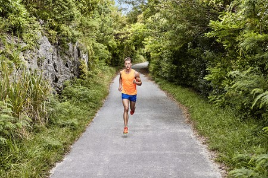

Museo Correr, Venice | Official Website

Museo Correr
Other museums Doge's
Palace
Doge's Palace
A masterpiece of Gothic architecture, is the very symbol of Venice
Museo
Correr
Museo Correr
The Royal Palace, the neoclassical rooms and Antonio Canova, the History of Venice and the Picture-gallery
Ca'
Rezzonico
Ca' Rezzonico
Among precious historical furnishings, it houses important works of the XVIII century Venice
Ca'
Pesaro
Ca' Pesaro
The International Gallery of Modern art houses masterpieces such as works by Medardo Rosso, Rodin, Kandinsky, Klee
Glass
Museum
Glass Museum
Housed in Murano, the museum hosts the most extensive historical collection of Murano glasses
Natural
History
Museum
Natural History Museum
An evocative and engaging layout for discover the secrets of nature and living beings
Mocenigo
Palace
Mocenigo Palace
Museum of Textiles and Costumes with the itineraries dedicated to perfume
Fortuny
Palace
Fortuny Palace
Visit the gothic Palazzo Pesaro degli Orfei located in Campo San Beneto and transformed by Mariano Fortuny into his private studio
Lace
Museum
Lace Museum
Housed in Burano, the museum exhibits rare and valuable specimens of Venetian lace, from the 16th to the 20th century
Carlo
Goldoni's
house
Carlo Goldoni's house
It’s the house where Carlo Goldoni was born and It contains a small museum dedicated to him, and a library of theatrical studies
Clock
Tower
Clock Tower
For over 500 years it has marked the life, the history and the continual passage of time of Venice
Visitmuve
Visitmuve
Visit the website of Civic Museums of Venice
Museo Correr
Discover the art and history of Venice
Museo Correr
Visit
Opening hours
Ticket prices
Plan your visit
The visit path is currently limited to the first floor
Find out more about layout and collections
Explore
Francesco Morosini
The last Serenissima's hero between history and myth
FRANCESCO MOROSINI
The last Serenissima’s hero between history and myth
From 28 June 2019
Discover >The Museum
Located in the heart of Venice, in St. Mark’s Square, the museum offers a fascinating insight into the art and history of Venice
Scopri >
Scopri >
Educational services
MUSEUMS FOR ALL TO ENJOY AND EXPLORE
Discover > The Imperial
Rooms
The “imperial” rooms summarizes a royal magnificence suitable for an Empress!
Scopri > The Canova
Collection
The sumptuous Neoclassical Rooms house a noteworthy collection of works by the great sculptor Antonio Canova (1757-1822)
Discover >The Correr Library
From July 6, 2021 The Library is open on Tuesday and Thursday from 10am to 4pm
Scopri >Photographic Archive
The Photographic Archive of the Musei Civici di Venezia works as a photographic library, with two main sections of materials
Scopri >What's on
Social
Museo Correr Follow @museocorrer Facebook Twitter YouTube LinkedIn Instagram © Fondazione Musei Civici di Venezia
C.F. e P.IVA 03842230272
